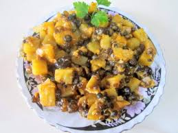
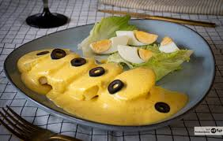

Plato típico del Departamento de Tarija, basado en guisantes (arvejas) y consistencia acuosa. La receta paceña aquí presentada carece de arroz como complemento.
La sopa de llullucha es un plato tradicional de la gastronomía boliviana, sobre todo en el departamento de Tarija, donde tiene variantes como el katuchupe
un plato de origen peruano que se bolivianizo debido a su excepcional salsa de maní y ají amarillo a diferencia de las galletas de agua y ají que se hace en territorio del vecino país.